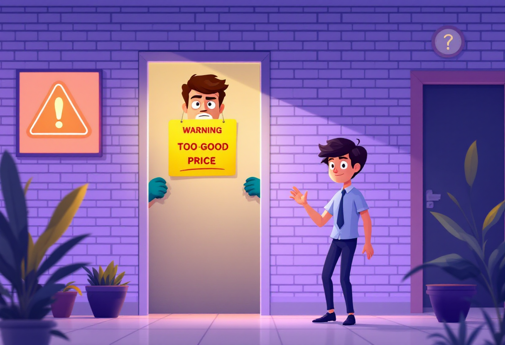

Зйом квартири — легко!
Короткий гайд: де знайти квартиру, що перевірити на перегляді, як не потрапити на шахраїв і що таке застава.
Як знайти квартиру
OLX, DIM.RIA, Lun.ua — перевіряй активність оголошення, фото, реальну адресу.
bird.AI — 3D-мапа зі штучним інтелектом, де розміщенні 70 000+ оголошень з топових сайтів нерухомості. Працює в Києві, Львові, Одесі, Харкові та Дніпрі.
Telegram/Facebook групи — локальні: «Оренда квартир Київ», «Зніму квартиру [район]».
Друзі та знайомі — часто дешевше, без посередників.
На що дивитись на перегляді
Сантехніка, електрика, опалення — крани, стік, розетки, батареї.
Вікна і двері — щільність закриття, тріщини.
Інтернет/ТВ — сигнал та розетки.
Сусіди та район — шум, безпека, транспорт, магазини.
Корисним буде поговорити з мешканцями будинку й задати питання, які цікавлять.
Види договорів
Письмовий договір = надійно.
Ознайомитися з договором оренди бажано за 1–2 доби до підписання. Якщо не впевнені у деяких пунктах, можна звернутися до штучного інтелекту для аналізу документу та обговорити всі питання з власником квартири.
Застава — фіксуємо суму та умови повернення.
Уточнюємо, хто оплачує комунальні, дрібний ремонт, меблі.

Як не потрапити на шахраїв
Не платити до перегляду.
Перевіряти власника через документи.
Просити контакти попередніх орендарів.
«Занадто гарна ціна» — подвійна перевірка, адже це може бути «червоним прапорцем».
Застава: як працює
Це гроші на гарантію, що квартира не буде пошкоджена (зазвичай 1 місяць оренди).
Платиш після перегляду і підписання договору — не раніше.
У договорі вказуємо: суму, умови повернення, за що можуть утримати; мають бути прописані всі дефекти квартири, як доказ.
Повернення застави відбувається після виїзду, якщо все в порядку; краще з письмовим підтвердженням.
Важливо! Фіксуй усі дрібні пошкодження: тріщини, подряпини, плями. Фото та відео при заселенні = гарантія повернення застави.